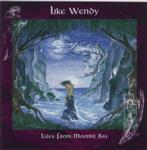

| Artist: | Like Wendy |
| Title: | Tales From Moonlit Bay |
| Label: | LaBraD'or Records LBD040011 |
| Length(s): | 64 minutes |
| Year(s) of release: | 2000 |
| Month of review: | [02/2001] |
| 1) | Falcon Suite | 20.57 |
| 2) | The Price For Trust | 4.40 |
| 3) | A King's Epitaph | 8.07 |
| 4) | Paradise | 5.33 |
| 5) | Ivory Tower | 4.58 |
| 6) | Live At Armageddon | 7.19 |
| 7) | Wreck Of The Dancer | 12.22 |
The next track is the more up-beat The Price For Trust, opening with guitar and percussion. During the good melodic verses, the percussion is slightly industrial and mechanic sounding. The warm vocals of the verse contrast with the not so beautiful sounding warped vocals of the chorus. A bit of groove in here, but I can't say I like the track very much.
A King's Epitaph is moodier with piping keyboards and through a slow build-up we come to the eerie vocals that lead up to a strongly symphonic passage. In a way the winding of the vocal melody reminds me of Peter Hammill at his most melodic. Of course, the voices themselves are totally unrelated. Both the vocal melodies used here are great and the passionate sounding instrumental interludes make this a much more likable track than the previous. A slightly folky acoustic intermezzo makes for a change of scenery in this track.
A pounding intro we hear to Paradise, certainly not a heavenly sounding track. I do not mean that the music is not good, but it is simply not very friendly or anything, something one might expect with such a title. The percussion is prominent, the keyboards yield dark sounds in the back and the singing loud and a little lost-sounding.
Ivory Tower is an acoustic track, with nice strumming acoustic guitar and a good vocal melody. At the very end, the music becomes fuller and majestic sounding. The next one Live At Armageddon is weird in the sense, that I have trouble believing that Like Wendy ever performed live. It does have a live sound and their is an audience present at the performance of this strong and varied instrumental, but still... The song is slightly spacey and more up-beat than otherwise. There is also quite a bit of sequencing going on giving the music a tense character. A nice effect is that during these softer parts, you can hear the audience talking. (Actually during a concert this is not nice at all, but that's how it is.) Like sometimes happened on earlier albums, there's something of Twelve Night in their earlier period in here.
The closer is the longish Wreck Of The Dancer. What can I add to what I already have said. Quite little, I suppose. The music is often melancholy as is the singing. Weirdly enough there are also some more optimistic melodies among them.
Jurriaan Hage